Aqui estão todas as sprints de tela que ainda não tinham desenho. As que já estavam nas páginas do todo aparecem como cobertas, com o lugar onde estão. As que ganharam desenho novo têm o antes e o depois, e você escolhe de uma vez: aprova, escolhe a leitura ou pede ajuste. As suas respostas ficam neste navegador, e o botão do topo copia tudo para você colar na conversa.
As quatorze sprints, uma por uma
| Sprint | Situação | Onde ver | O que há |
|---|---|---|---|
| A-ABA-PERFIS-DO-TODO-01 | coberta | 10-perfis.html | mudanças 1 a 18 (estilo 3 e 14, «Quando» 7, datas 8 e 10) |
| A-ABA-MAPAS-DO-RADIO-E-DAS-PORTAS-DO-TODO-01 | coberta | mapa-do-radio.html mapa-das-portas.html | mapa do rádio 1 a 5 e mapa das portas 1 a 4 |
| CADA-FEATURE-TEM-UM-DONO-SO-NA-INTERFACE-01 | coberta | 02-controles.html calibrar-sensores.html | Controles 6 e 7, Calibrar 3 |
| A-ABA-MAPA-DO-CONTROLE-DO-TODO-01 | coberta e desenho novo | mapa-do-controle.html | 1 a 18 já estavam; a rodada 4 acrescenta 19 (moldes com os nomes da Navegação) e 20 (grupo Meus perfis) |
| A-ABA-CONEXOES-DO-TODO-01 | coberta e desenho novo, duas leituras | 08-conexoes.html | 1 a 12 já estavam; a rodada 4 acrescenta 13 (o giroscópio nos cartões, leitura A ou B) |
| A-ABA-NAVEGACAO-DO-TODO-01 | coberta | 06-navegacao.html | mudanças 1 a 27 |
| A-ABA-SISTEMA-DO-TODO-01 | coberta | 09-sistema.html | mudanças 1 a 11 |
| O-MAPA-DAS-CONEXOES-MOSTRA-A-CADEIA-USB-E-O-REGISTRO-DELA-01 | desenho novo (marcação) | mapa-das-portas.html | o desenho já existia na página sem âncora; a rodada 4 marca 5 (hub como um chip), 6 (enlace), 7 (não apareceu neste início) e 8 (aba Registro) |
| O-PERFIL-GUARDA-A-DATA-EM-QUE-NASCEU-E-A-DA-ULTIMA-MUDANCA-01 | coberta | 10-perfis.html | mudanças 8 e 10 |
| A-ABA-EXPERIMENTAL-DO-TODO-01 | coberta | 07-lancadores.html | mudanças 1 a 33 |
| OS-ALVOS-E-A-LETRA-CRESCEM-E-A-INTERFACE-GANHA-TAMANHO-01 | desenho novo, duas leituras | 02-controles.html 06-navegacao.html 09-sistema.html calibrar-sensores.html | Controles 18, Navegação 28 (aba e janela Acessibilidade), Sistema 12, Calibrar 7; a leitura C (só «Tamanho da interface») já está no 09 do todo |
| OS-ACESSORIOS-SEGUEM-OS-JOGOS-ESCOLHIDOS-COM-A-FORCA-NO-DESLIZANTE-01 | desenho novo | 07-lancadores.html | 34 (lista de jogos com perfil, uma caixa por jogo, nasce vazia) e 35 (deslizante por canal e por aparelho) |
| O-JOGO-DOS-ACESSORIOS-CHEGA-A-ABA-VIBRACAO-E-AS-JANELAS-01 | coberta | 07-lancadores.html | a janela do Kyty em quatro cartões (Programa, Jogos, Controle, Som) já está no 07 do todo, mudança 16; foto em fotos/07-lancadores-kyty.png |
| O-ESTADO-DIZ-O-QUE-O-JOGO-VE-DE-CADA-CONTROLE-01 | desenho novo | 01-jogar.html 02-controles.html | Jogar 12 (a forma que o jogo vê e o motivo) e Controles 17 (o que chega, função por função) |
As nove que outras sprints já absorveram
| Sprint | Situação | ||
|---|---|---|---|
| A-ABA-SISTEMA-FICA-COM-SEIS-LINHAS-E-O-REGISTRO-CABE-NA-JANELA-01 | absorvida por A-ABA-SISTEMA-DO-TODO-01 (09-sistema.html) | ||
| A-CAPTURA-DE-TECLA-SE-FAZ-SOBRE-O-MAPA-DO-CONTROLE-01 | absorvida por A-ABA-MAPA-DO-CONTROLE-DO-TODO-01 (mapa-do-controle.html) | ||
| A-ABA-NAVEGACAO-TEM-OS-DOIS-POINT-AND-CLICK-E-A-VELOCIDADE-QUE-FUNCIONA-01 | absorvida por A-ABA-NAVEGACAO-DO-TODO-01 (06-navegacao.html, mudança 10) | ||
| A-FUNCAO-DO-TECLADO-GANHA-O-SEMPRE-01 | absorvida por A-ABA-NAVEGACAO-DO-TODO-01 (06-navegacao.html, mudança 10) | ||
| O-PERFIL-SE-ACHA-PELO-NOME-DO-JOGO-E-SE-APLICA-EM-QUATRO-ALVOS-01 | absorvida por A-ABA-PERFIS-DO-TODO-01 (10-perfis.html) | ||
| O-TOUCHPAD-LIGA-E-DESLIGA-NA-ABA-CONTROLES-01 | absorvida por A-ABA-CONTROLES-DO-TODO-01 (02-controles.html, mudança 5) | ||
| O-BOTAO-DIREITO-ABRE-O-MENU-DO-HEFESTO-EM-TODA-ABA-01 | absorvida por A-BASE-COMUM-DAS-ABAS-01 | ||
| O-POINT-AND-CLICK-FICA-NO-LIGADO-E-A-NAVEGACAO-NO-DESLIGADO-01 | absorvida por A-ABA-JOGAR-DO-TODO-01 (01-jogar.html, mudanças 2 e 3) | ||
| A-CADEIA-USB-SE-RECONHECE-EM-QUALQUER-PC-E-CADA-MUDANCA-VAI-AO-REGISTRO-01 | back-end do mapa das conexões: o desenho está nas mudanças 5 a 8 do mapa das portas | ||
O que ganhou desenho novo, para você escolher
Mapa do controle: os moldes com os nomes da Navegação
A-ABA-MAPA-DO-CONTROLE-DO-TODO-01Os moldes têm os mesmos quatro nomes da aba Navegação: Point and click, Visual novel, Mouse e Mouse e teclado; sai o grupo «Point and click» com «Só mouse», «Teclado e mouse» e Orpheus
Para você decidir. Orpheus e Maid Life SS passam para «Meus perfis», porque são perfis seus e não moldes: a Navegação só lista os quatro moldes.
Mapa do controle: o grupo Meus perfis
A-ABA-MAPA-DO-CONTROLE-DO-TODO-01Seus perfis (Orpheus, Maid Life SS) ganham um grupo próprio, «Meus perfis», depois dos moldes
Para você decidir. A página do todo tinha Orpheus sob «Point and click» e Maid Life SS sob «Trocar os botões»; ao pôr os moldes nos nomes da Navegação, os dois ficaram sem grupo.

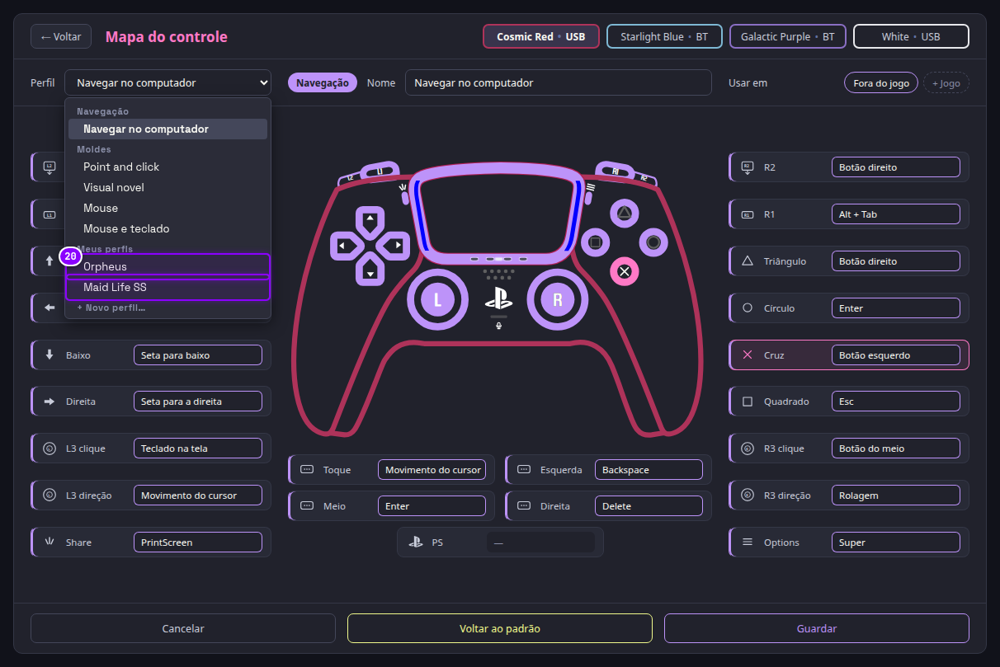
Conexões: o giroscópio nos cartões (duas leituras)
A-ABA-CONEXOES-DO-TODO-01O cartão do controle mostra o giroscópio como analógico? DUAS LEITURAS: A mantém a linha só de leitura nos cartões; B tira a linha, e o ajuste mora só na aba Controles
Para você decidir. Substitui a 08-6 se você escolher B; a A deixa a 08-6 como está.
Mapa das portas: o hub como um chip
O-MAPA-DAS-CONEXOES-MOSTRA-A-CADEIA-USB-E-O-REGISTRO-DELA-01O hub entra na cadeia como um só chip: «Hub USB 3 · 7 entradas», com os aparelhos dele logo abaixo
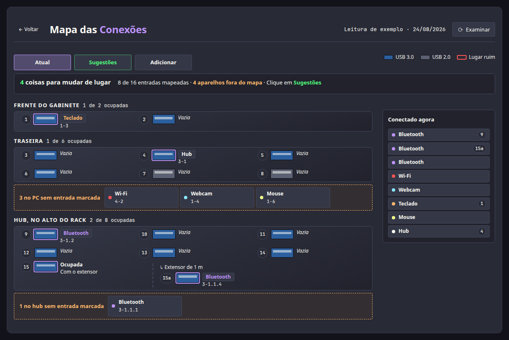
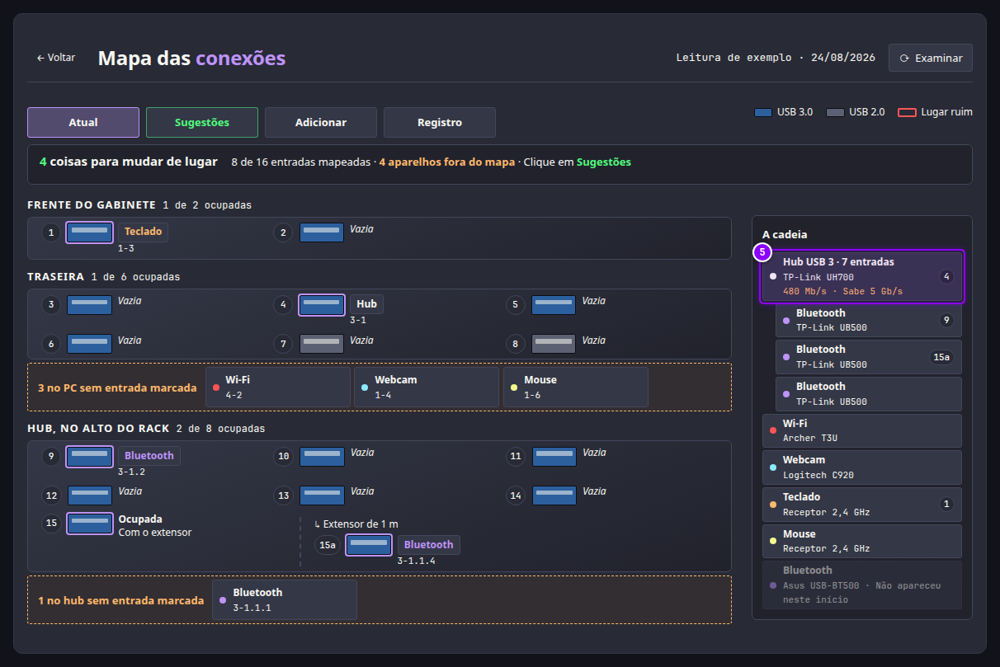
Mapa das portas: o enlace do hub
O-MAPA-DAS-CONEXOES-MOSTRA-A-CADEIA-USB-E-O-REGISTRO-DELA-01O enlace do hub aparece sob o nome: «480 Mb/s · Sabe 5 Gb/s», em laranja quando o hub negocia menos do que sabe

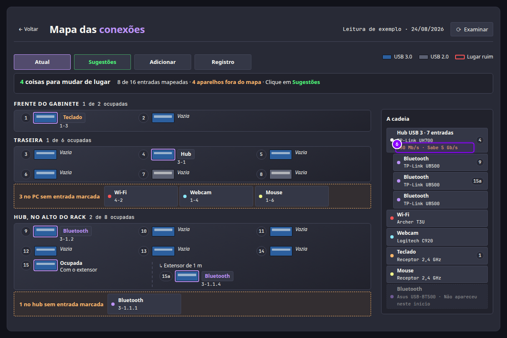
Mapa das portas: o que não apareceu neste início
O-MAPA-DAS-CONEXOES-MOSTRA-A-CADEIA-USB-E-O-REGISTRO-DELA-01O aparelho que sumiu fica na cadeia, apagado: «Não apareceu neste início»

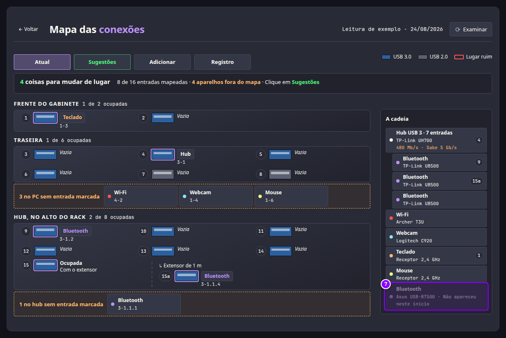
Mapa das portas: a aba Registro
O-MAPA-DAS-CONEXOES-MOSTRA-A-CADEIA-USB-E-O-REGISTRO-DELA-01Uma quarta aba, Registro, lista o que entrou, saiu, voltou e ficou lento, com hora e entrada; o botão Copiar leva o texto
Para você decidir. DUAS LEITURAS na dica do nome: o BRIEF-ACESSORIOS-USB pede «Driver: hub» na dica; a rodada 3 (portas-4) pediu sem nome de driver. A página segue a rodada 3.

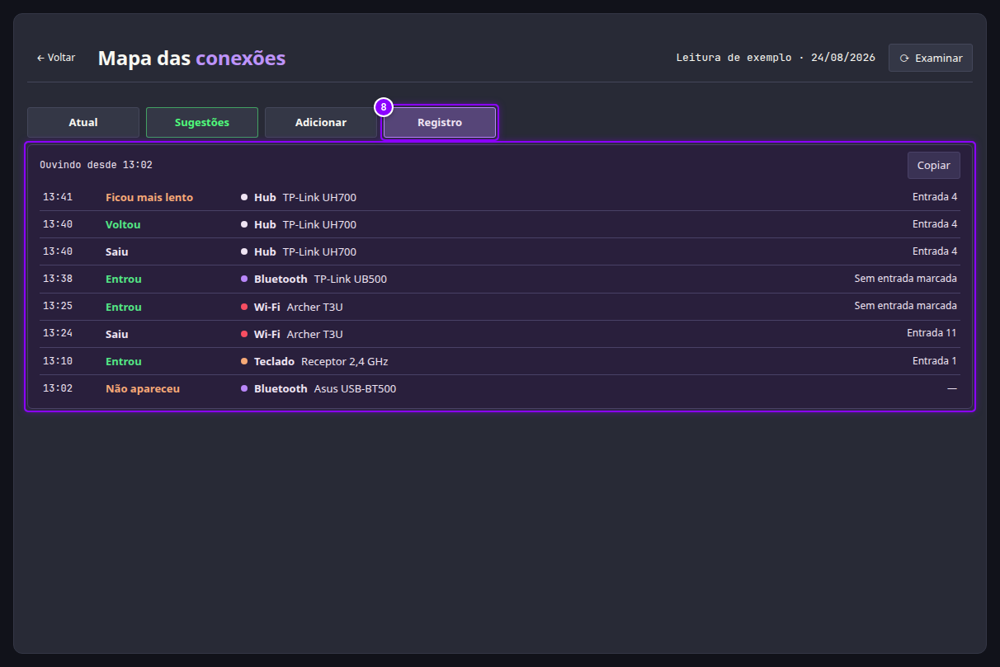
Experimental: os jogos que os acessórios seguem
OS-ACESSORIOS-SEGUEM-OS-JOGOS-ESCOLHIDOS-COM-A-FORCA-NO-DESLIZANTE-01A janela Lovense, em «O que seguem», ganha a lista dos jogos que têm perfil, uma caixa por jogo; nasce toda vazia, e só você marca
Para você decidir. Os nomes são de exemplo (os jogos com perfil). Sem nenhum jogo marcado e com «Os jogos que eu escolher» no «Quando», os acessórios ficam parados.

Experimental: a força de cada canal, por aparelho
OS-ACESSORIOS-SEGUEM-OS-JOGOS-ESCOLHIDOS-COM-A-FORCA-NO-DESLIZANTE-01No lugar de «Força do Segue o jogo − 1,0 +», um deslizante por canal (Vibração, Gatilho, Háptica) para cada aparelho, de 0 a 20; o aparelho recebe o maior dos três
Para você decidir. O padrão de fábrica dos três é 10/20 (50 %), decidido por delegação, a validar por você.
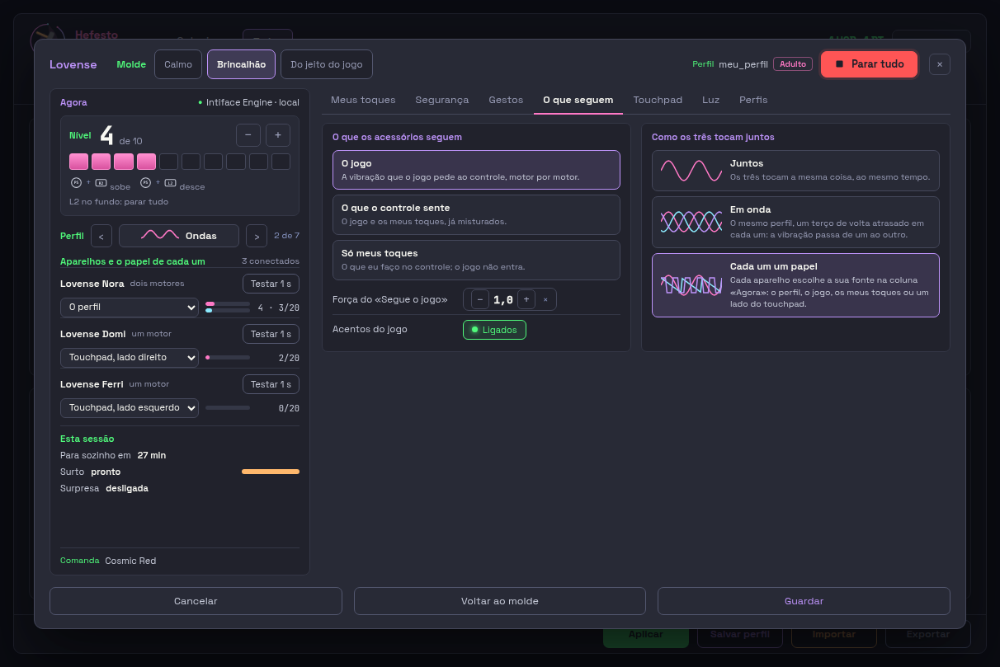

Jogar: o que o jogo vê de cada controle
O-ESTADO-DIZ-O-QUE-O-JOGO-VE-DE-CADA-CONTROLE-01Cada cartão de controle ganha a linha «O jogo vê»: a forma (DualSense, Xbox 360 ou Pro Controller), o canal (próprio ou comum) e, em laranja, o motivo quando difere do que você escolheu
Para você decidir. Os quatro casos estão na página: padrão, ?estado=modo-xbox, ?estado=pro e ?estado=queda. O texto do motivo é de exemplo; o daemon manda o motivo pronto.

Controles: o que chega ao jogo, função por função
O-ESTADO-DIZ-O-QUE-O-JOGO-VE-DE-CADA-CONTROLE-01Ao lado da forma que o jogo vê, o botão «O que chega» abre as doze funções (botões, analógicos, gatilhos, vibração, háptica, luz, luz de jogador, giroscópio, touchpad, microfone, alto-falante), cada uma como Nativo, Pelo Hefesto ou Não chega
Para você decidir. A lista mostra o caso do Xbox 360 no modo Xbox; para o DualSense tudo vira Nativo, e para o Pro Controller o gatilho analógico e a luz de jogador não chegam. A «Luz» como «Pelo Hefesto» é leitura nossa da tabela medida: a validar por você.


Controles: alvos de 24 px e letra de 12 px (duas leituras)
OS-ALVOS-E-A-LETRA-CRESCEM-E-A-INTERFACE-GANHA-TAMANHO-01Na aba Controles, os 15 alvos de menos de 24 px (interruptores, deslizantes de volume, botões de mudo e de padrão, botão «Ligado» do touchpad, seletores de controle) crescem para 24 px; na leitura B a letra sobe para 12 px, e o corpo do quadro apertou o respiro para não rolar
Para você decidir. Medido na página de hoje: 15 alvos abaixo de 24 px e 88 de 129 textos abaixo de 12 px. Na leitura A sobram 0 alvos; na B sobram 0 alvos e só os 4 textos de SVG. Sobram letras abaixo de 12 px só dentro de desenhos SVG (rótulos do gráfico), que não são texto da interface; a leitura B não os toca. Em 1212x740 a leitura B afrouxa o espaçamento do quadro em 2 px para não rolar.
Navegação e Acessibilidade: alvos de 24 px e letra de 12 px (duas leituras)
OS-ALVOS-E-A-LETRA-CRESCEM-E-A-INTERFACE-GANHA-TAMANHO-01Na Navegação e na janela Acessibilidade, os 7 alvos da aba (seletores de linha e o botão de navegação) e os 17 da janela (os botões «−» e «+» de cada passo e os seletores) passam a 24 px; na leitura B a letra sobe para 12 px
Para você decidir. Medido na página de hoje: 7 alvos abaixo de 24 px na aba e 24 com a janela Acessibilidade aberta (17 deles na própria janela); 22 e 57 textos abaixo de 12 px. Depois, 0 alvos nas duas leituras; na B sobram só 10 textos de SVG. Sobram letras abaixo de 12 px só dentro de desenhos SVG (rótulos do gráfico), que não são texto da interface; a leitura B não os toca.
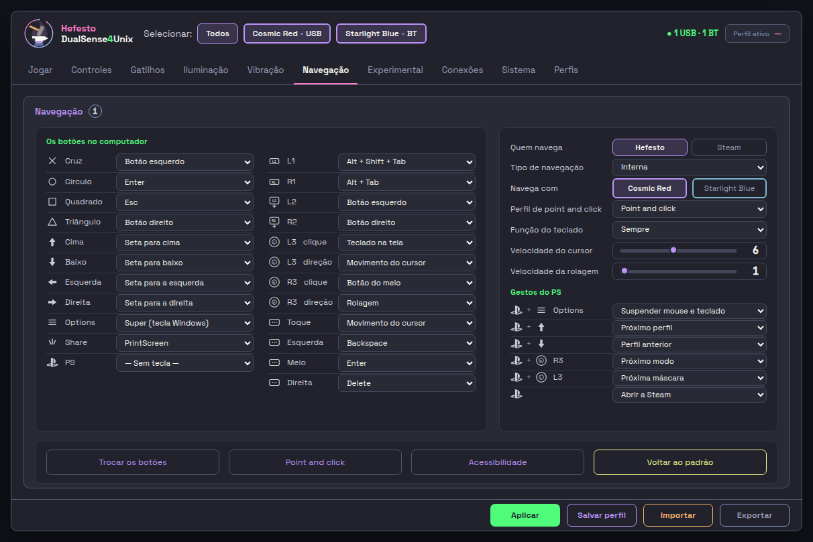
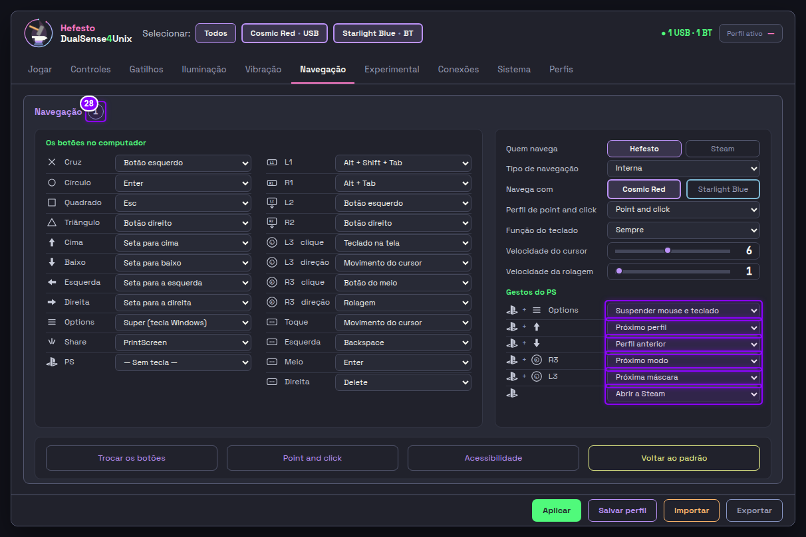
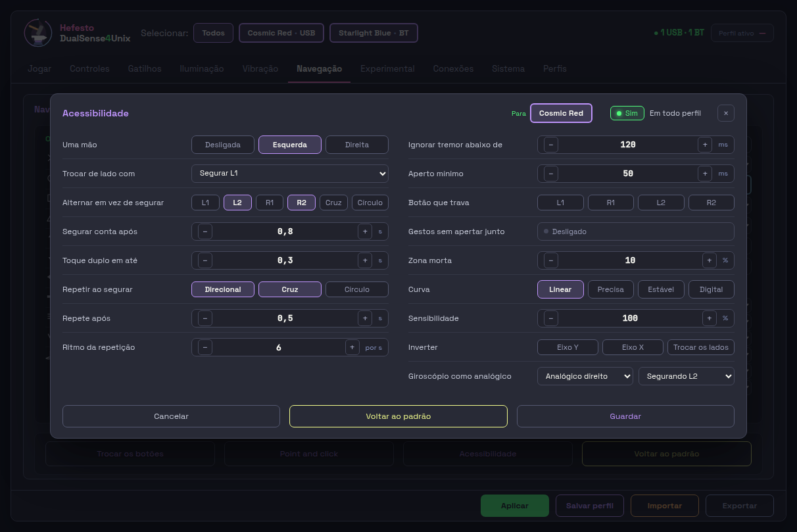
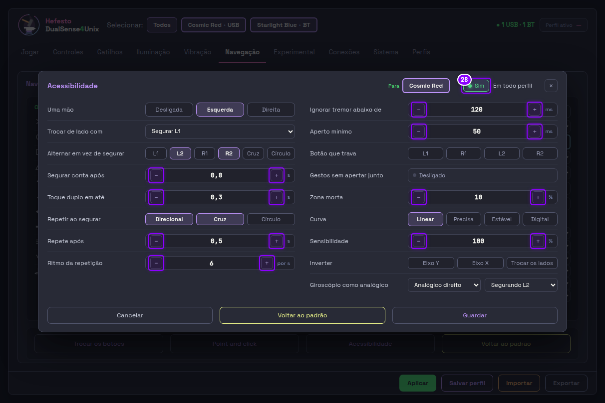
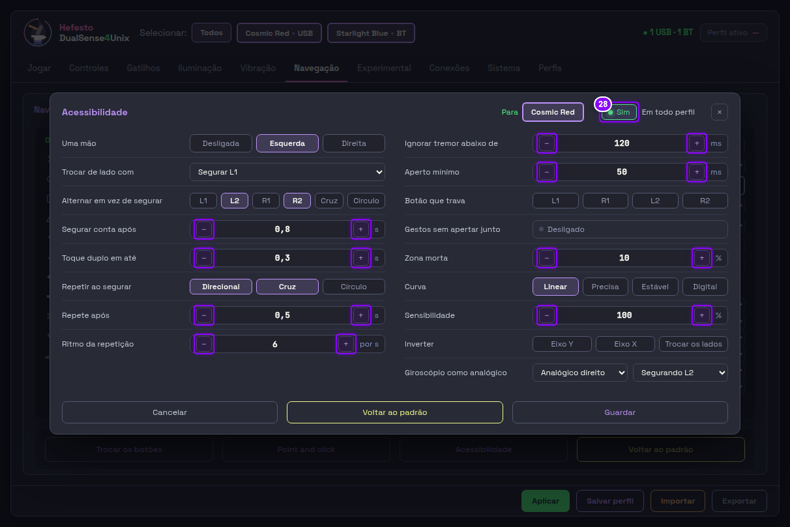
Sistema: letra de 12 px (duas leituras)
OS-ALVOS-E-A-LETRA-CRESCEM-E-A-INTERFACE-GANHA-TAMANHO-01Na aba Sistema todos os alvos já têm 24 px ou mais, então a leitura A não muda nada; a leitura B sobe para 12 px os 18 textos pequenos (selos, siglas, o botão Copiar e o registro)
Para você decidir. Medido na página de hoje: 0 alvos abaixo de 24 px e 18 de 72 textos abaixo de 12 px. A leitura A é igual à tela de hoje (a foto mostra o mesmo desenho); a diferença está na B, que fica com 0 textos abaixo de 12 px. A leitura C (tamanho da interface) já está aqui na aba.
Calibrar giroscópio: letra de 12 px (duas leituras)
OS-ALVOS-E-A-LETRA-CRESCEM-E-A-INTERFACE-GANHA-TAMANHO-01Na janela Calibrar giroscópio todos os alvos já têm 24 px ou mais, então a leitura A não muda nada; a leitura B sobe para 12 px os 48 textos pequenos (valores, eixos, rótulos) e aperta o respiro entre os blocos
Para você decidir. Medido na página de hoje: 0 alvos abaixo de 24 px e 48 de 76 textos abaixo de 12 px. Em 1212x740 a janela de hoje já rola 33 px por dentro (o corpo tem rolagem própria); a leitura B apertou o respiro e deixa de rolar, a A fica como hoje, e isso fica anotado para você escolher. Sobram letras abaixo de 12 px só dentro de desenhos SVG (rótulos do gráfico), que não são texto da interface; a leitura B não os toca.

Kyty: a janela em quatro cartões (já coberta)
O-JOGO-DOS-ACESSORIOS-CHEGA-A-ABA-VIBRACAO-E-AS-JANELAS-01Esta já está no desenho do todo, na Experimental (mudança 16): Programa, Jogos, Controle e Som. A foto está aqui só para você conferir.
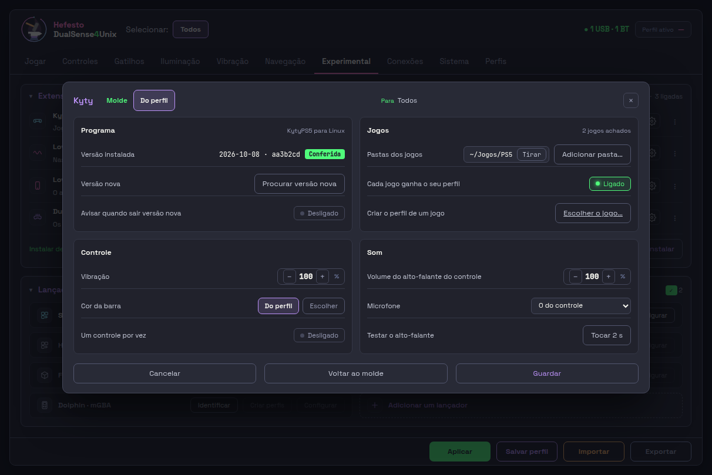